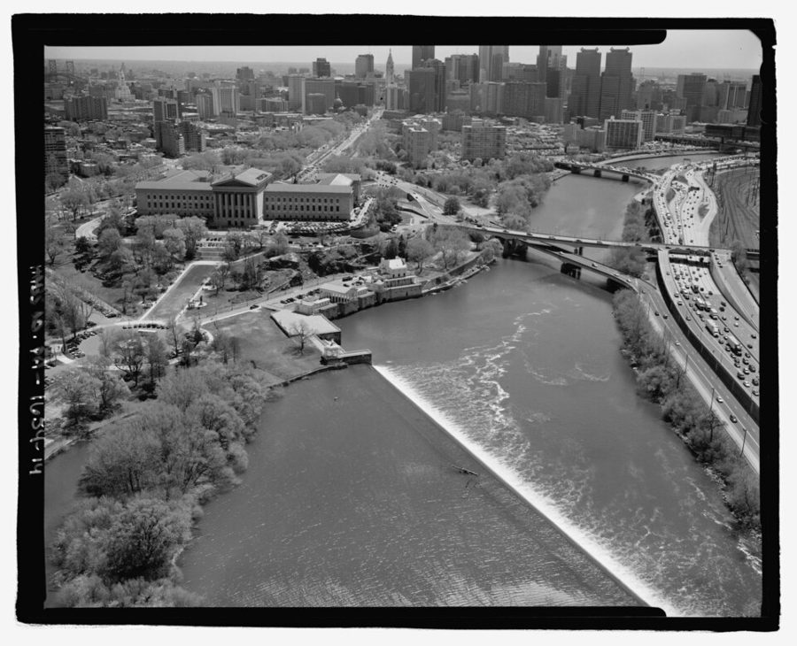
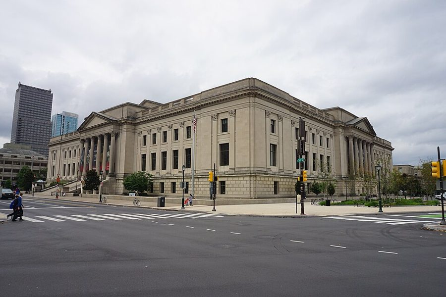

这一页在做什么
全书最后一章，不讲经历，讲他七十四岁时的几点看法。前一半和两种流行说法争论：一是把各族群之间的统计差距一律看成社会造成的不公，二是黑人学生要有黑人老师当榜样才学得好。后一半回头数自己的运气：哪几个人、哪几次碰巧，少了一个可能就没有后来。读的时候抓两条线：他拿什么当证据，这些证据够不够；他怎么同时说「靠自己」和「靠运气」。
Walter E. Williams 2013 年 9 月在得克萨斯理工大学讲演，题目是「政府在自由社会里的角色」。这时离他写完这本书已经三年。Free Market Institute at Texas Tech University，CC BY 3.0，维基共享资源 读之前：这一页在他一生的哪里
上一页停在 2010 年：他卸下系主任，在 George Mason 一学期只教一门课，说希望余生就这样教书、写作、偶尔上电台电视。这一章没有新的事件，是全书的后记（Afterthoughts）。2010 年前后，美国有了第一位黑人总统，关于种族差距、平权、学校的争论并没有停，他在这一章挑了其中两个说法来驳。
读的时候带着这几个问题。不用先找答案，读完回来对照「检查一下理解」。
他不否认年轻时的歧视，但他提了三个问题。这三个问题各在问什么？§1
他反驳「榜样」之说，用的证据有几样？哪些是亲身经历，哪些是数字？§1
他前面说自己靠努力，后面又说靠运气。这两种说法矛盾吗？§1
初中
Meekins 太太
高中
Rosenberg
1957–58
开出租，遇 Connie
Cal State
Kirsch 教授
1965
征文比赛落选
1968
资格考挂科
1969
第一份全职教职
年份取自前几章；这一章只列事，不写年份
本站示意图：第 13–18 段他列的「假如没有」，按时间排开。每一处都有一个人：老师、妻子、教授、父亲的第四任妻子和那位评委、UCLA 的 Leijonhufvud。 分节地图
这一页是原书第 7 章（Afterthoughts，后记）全章。这一章没有小标题，本站记作 §1。粗体是这一节的地标；斜体是英文这一节开头的几个词，在 Kindle 里搜它就能跳到那里，错字照电子书原样。读完打个勾。
七十四岁回头看：差距、榜样、运气约 1500 词 NTY-FOUR at this writing-affords insights … 开头一句丢了几个字。第 6–10 段驳榜样之说，第 13 段起数运气，最后谢两位女士。
出场的人
按出场顺序。书里的家人和老师只写书里说的；公众人物写生卒年。这一章里的人前面几章多半出过场，卡片只写他们在这一章里的分量。
Mom 作者的母亲，第 1 章起 第 4–5 段：小时候带兄妹俩上图书馆、艺术博物馆，逼他们写作业、守规矩。第 11 段那句「啤酒钱包、香槟口味」是她的话；第 19 段，全书最后谢的第一位女士。
Devyn 作者的女儿 第 4–5 段：八十年代他照样带她周末去科学馆，那里常常只有他们父女两个黑人。
Bill Cosby 1937 年生，喜剧演员，公众人物 第 7 段：作者说一起在 Richard Allen 长大的同伴里出了一位千万富翁，就是他。2010 年写书时他还是一位正面人物，后来的事见「背景」。
祖母或外祖母 书里这里没说是哪一位 第 11 段：常说「不富也可以干干净净」。
Viola Meekins 初中班主任，第 1 章出过场 第 14 段：作者说她和 Rosenberg 一样严厉，「一点不在乎我的自尊心」，这是夸她。
Martin Rosenberg 高中英语老师，第 1 章出过场 第 14 段：和 Meekins 并列的「严厉的老师」。
Connie 作者的妻子 第 15 段：没去 Yellow Cab 开出租就遇不上她；第 19 段：全书最后谢的第二位女士，磨掉了他身上许多棱角。
Arthur Kirsch Cal State 的经济学教授，第 4 章出过场 第 16 段：导师，后来帮他拿到第一份全职教职。
父亲的第四任妻子 书里没写名字 第 16 段：劝他参加她的姐妹会和 Seagram's 合办的奖学金征文。他没赢，但一位评委劝他去读 UCLA 研究生院。
Axel Leijonhufvud 1933–2022，瑞典裔经济学家，公众人物 UCLA 经济系教授。第 17 段：他挂了博士理论考，Leijonhufvud 说他的卷子是最差的之一，又补了一句「我们觉得你能做得更好」。
继父 母亲的丈夫，作者叫他 Pops，第 2 章出过场 第 18 段：人生很多是运气，机会的火车说来就来，行李要先收拾好。作者说这是他能给的最好的建议。
背景：作者默认你知道的事
按在书里出现的顺序排，标题前是节号。这里只讲事情本身，作者怎么看放在后面几节。
§1 「民权视角」这个说法第 2 段的 the civil rights vision，作者说是「我所说的」，没注出处。这个说法在 Thomas Sowell 1984 年的书 Civil Rights: Rhetoric or Reality? 里就有：Sowell 批评民权运动后期的一套思路，它的两个前提是歧视造成贫困等不利后果，统计上的差距意味着有歧视。vision 在 Sowell 那里指一整套不加检验的看世界的框架。作者这一段的措辞和 Sowell 的两个前提几乎一一对应。
§1 Parkway 上的图书馆、博物馆和水族馆
2003 年从空中拍的费城 Schuylkill 河边：坝旁那排小楼是 Fairmount 自来水厂旧址，上方山坡上的大楼是费城艺术博物馆，从它门前斜着通向市中心的就是 Benjamin Franklin Parkway。Jack E. Boucher（美国国家公园管理局历史建筑测绘），公有领域，维基共享资源 第 4 段的几个地方都在费城市中心西北的 Benjamin Franklin Parkway 一带。免费图书馆的总馆 1927 年在这条大道上建成，费城艺术博物馆 1928 年开馆，就在大道尽头的山坡上，所以他说两处挨得近。「城里的水族馆」应是 Fairmount 公园水族馆：1911 年开在博物馆下方河边的旧自来水厂里，1962 年底关门。第 1 章说的小时候常去的是西费城的分馆，搬到北费城后改去总馆。
2017 年从艺术博物馆的台阶往下看 Benjamin Franklin Parkway，大道尽头的尖塔是市政厅。Michael Barera，CC BY-SA 4.0，维基共享资源
§1 富兰克林研究所的科学馆
2017 年的富兰克林研究所，在 Parkway 和 20 街的路口。Michael Barera，CC BY-SA 4.0，维基共享资源 The Franklin Institute 1824 年为推广科学和工艺而成立，1934 年搬进 Parkway 上的这栋楼，楼里是一座科学博物馆。书里说它要买门票，所以小时候很少真进去；图书馆和艺术博物馆不用花这笔钱。到了八十年代，他常带女儿去。
§1 「榜样」和按种族招聘老师七八十年代，一些学区和大学用「少数族裔学生需要同族的榜样」作理由，优先招聘、保留黑人老师。最出名的争议是 1986 年的 Wygant 案：密歇根州 Jackson 市学区规定裁员时先保住少数族裔老师，哪怕资历更浅的白人老师因此被裁。联邦地区法院以「提供榜样」为由维持；最高法院推翻了这条规定，Powell 大法官执笔的意见不接受「榜样」这个理由。第 6 段说这套说法支持过「招聘里的种族优先」，指的就是这一类做法。
§1 Bill Cosby：2010 年和今天Cosby 1937 年生，在北费城的 Richard Allen 公共住房长大，六十年代起以单口喜剧和电视成名，八十年代的《考斯比一家》（The Cosby Show）最出名，还常在公开场合劝黑人家长和青年自立，所以 2010 年作者拿他当正面例子。后来先后有六十多位女性指控他性侵；2018 年他被判性侵罪成立入狱，2021 年宾州最高法院以检方违背前任检察官的不起诉承诺为由撤销定罪，他获释，没有被宣告无辜。公开的传记里，他上的中学是 Central 和 Germantown 高中，不是作者那几所；第 7 段的 classmates 说的多半是一起在小区长大的同龄人。
§1 州统考和 proficient第 9 段的数字来自宾州的州统考 PSSA。成绩分四档：advanced、proficient、basic、below basic，「proficient 及以上」就是达到年级要求，学校的「达标率」一般就指这一档以上的比例。2005 年前后，宾州十一年级要考阅读、写作和数学；后来高中改考 Keystone 考试。Benjamin Franklin 高中是他 1954 年毕业的学校，第 1 章他自己说过，那时它已是费城学术评级最低的高中。本站没找到 2005 年这所学校的原始成绩表，书里的三个数字没有核对。
§1 姐妹会和 Seagram's 的征文比赛sorority 是美国大学里的女生联谊会，毕业后会员终身参加。第 4 章说父亲第四任妻子的姐妹会是 Alpha Kappa Alpha：1908 年在霍华德大学成立，是黑人女大学生创办的第一个希腊字母会，长年办奖学金。Seagram's 是一个金酒牌子，当年和她们合办这项征文奖学金。他落选了，评委之一是 UCLA 经济系的 Harold Summers（第 4 章写过他的名字），劝他报考研究生院。
先用中文过一遍：这一页的经济学
作者讲到经济学的地方，这里先从书外把道理讲一遍：它是什么、经济学一般怎么分析。它在这一页起什么作用，看每块最后一句。讲过的概念都汇总在经济学概念 。
§1 统计差距不等于歧视：混杂因素 statistical disparity, confounding 两组人在收入、成绩上的平均差距，只说明「不一样」，不说明为什么。统计里把同时和「组别」「结果」都相关的第三个因素叫混杂因素（confounder），比如年龄、居住地区、教育、家庭结构。像比较两台服务器的平均响应时间：差一倍，可能是机器慢，也可能是分到的请求不一样。经济学的做法是把这些因素控制住再比，剩下的差距更可能来自歧视；也可以用实验直接测，比如寄出只有名字不同的简历。主流看法：控制之后差距通常缩小但不消失。争议在于剩下的有多少算歧视，以及被控制的因素（学校、住处）本身是不是过去歧视的结果。
在这一页： 第 2–3 段，作者反对把差距一律当成社会造成的不公，追问有多少能「单用歧视」解释。他没有给数字。
族群
收入、成绩
的差距
今天的歧视（直接）
年龄、住在哪里
家庭、学校
教育、技能
中间这几样，有的本身就带着过去歧视的痕迹
本站示意图：同一个差距，可以从上面那条路来，也可以从下面几条路来。作者第 3 段问「有多少能单用歧视解释」，问的就是上面那条线有多粗。图里的分类是本站举的例子，不是书里的。
§1 榜样效应和师生同族 role-model effect, teacher-student race match 榜样效应说的是：学生看到和自己相像的人做到了，会提高对自己的期待，更肯用功。教育研究里常量的是「师生同族」的作用：学生分到同族老师，成绩、毕业率有没有变化。难点是分开原因：同族老师可能是榜样，也可能对学生期待更高、更少把学生送去处分、沟通更顺。所以研究者偏爱随机分班的实验或准实验。主流看法：多数这类研究发现黑人学生分到黑人老师有正面作用，幅度不大；榜样是候选的渠道之一，没有定论。争议在政策上：据此多招、留住黑人老师争议较小，按种族优先招聘或裁员就分歧很大。
在这一页： 第 6–10 段，作者用亲身经历、一组 2005 年的考试数字和亚裔学生的例子，说「黑人学生需要黑人老师当榜样」站不住。
作者的论证，一步一步
「民权视角」把各族群在收入、教育上的统计差距看成社会造成的不公，把「歧视损害成就」「不消除歧视就无法进步」当成不容质疑的公理。§1 第 2 段
他承认年轻时的歧视远比今天重，但要问：眼前的现象有多少单靠歧视能解释，歧视挡路挡到什么程度，被歧视的人手边有什么工具。总不能坐等歧视结束。§1 第 3 段
工具的例子：母亲带他们去图书馆、博物馆，逼他们写作业、守规矩。这些种族主义者夺不走。§1 第 4–5 段
他上学时只遇到两三个黑人老师，校长、副校长也全是白人；Richard Allen 的同伴很多成了中产，榜样主要是父母家人。聚会时没人记得谁读写差到填不了求职表。§1 第 7–8 段
2005 年母校十一年级的达标率极低，而今天费城的黑人老师和管理者比例高。他说榜样之说若有实据，结果该反过来。§1 第 9 段
日裔、华裔美国学生在多数学业测试里居于前列，教他们的历来是白人老师。§1 第 10 段
各族群之间的统计差距，是不是社会歧视造成的
主流看法： 经济学家一般认为两样都有。Bertrand 和 Mullainathan 2004 年的简历实验直接测到了招聘歧视：白人名字收到的面试回电多一半；同时，教育、地区、家庭等因素也能解释很大一部分差距，而这些因素又部分来自过去的歧视。
作者的看法： 反对把差距一律当作社会造成的不公，要先问有多少能单用歧视解释；不论答案如何，被歧视的人都不该坐等（第 2–3 段）。
本站的评论： 他问的问题是经济学的正题，主流研究也在问同一件事，这一点站得住。弱处在于他只提问、不答：书里没有一个数字说明歧视解释了多少。第 4–5 段的图书馆和作业，证明的是「不必坐等」，证明不了「歧视影响小」。两件事读的时候要分开。
黑人学生需不需要黑人老师当榜样
主流看法： 用田纳西州随机分班实验做的研究（Dee 2004；Gershenson 等人 2022）发现，黑人学生分到黑人老师，成绩和后来的升学都有提高，幅度不大。也有早期研究（Ehrenberg 等人 1995）发现影响很小。
作者的看法： 这是一种「教条」，带着「替自己谋利」的成分，曾被用来要求按种族招聘；他自己和日裔、华裔学生都没靠同族老师（第 6–10 段）。
本站的评论： 他驳「必须」这一层是有力的：没有黑人老师也能学好，他自己就是例子。驳「有用」这一层就弱了：1950 年代的初中和 2005 年的高中之间，生源、家庭、城市就业、学校本身都变了，单拿老师的肤色解释成绩，正是他第 3 段提醒别人别犯的单因归因。而且第 1 章他自己说过，那所高中当年就是全市评级最低的。多数控制了这些因素的研究，结论和他相反。
老师对黑人学生是不是不够诚实
主流看法： Harber 等人 2012 年的实验里，白人老师批改同一篇差作文，以为作者是黑人或拉丁裔学生时，表扬更多、批评更少。另一些研究（Yeager 等人 2014）发现，批评的同时写明「我标准高，也相信你做得到」，黑人学生更愿意修改作文。
作者的看法： 他庆幸自己的分数是挣来的；如今太多黑人学生得不到诚实的评价，因为老师想补偿历史上的歧视，或怕被学生闹、被指为种族主义（第 17 段）。
本站的评论： 这一条有实验支持，比榜样那一条站得稳。他说的原因（想补偿、怕被指控）实验没有直接测。有意思的是他自己引的 Leijonhufvud 那句话，前半句是最差，后半句是你能做得更好，正好是后来研究说最管用的那种批评。
词与短语
你用 Kindle，单个生词长按就能查，这里只收词典帮不上的：每个词都认识、合起来不懂的说法，口语和俚语，那个年代的说法，反话。斜体小字是原句里连续的几个词，错字照电子书原样，搜它就能跳到那里。点「记下」收进词本。
§1 七十四岁回头看：差距、榜样、运气
afford insights
… affords insights unavailable to those with …
让人看得出（别人看不出的东西）
afford 在这里是「提供、给予」，不是「买得起」。主语是丢掉的那几个字：他的年纪。
racial dogma
… evaluating some of today's racial dogma …
关于种族的教条
dogma 带贬义：不许质疑、照单全收的信条。这个词这一章用了六次。
the civil rights vision
… what I call the civil rights vision …
「民权视角」：一套看种族问题的框架
vision 不是「视力、愿景」，是一整套看世界的预设。见「背景」。
statistical disparities
… premise is that statistical disparities in income …
统计上的差距
见「经济学」的第一块。
taken to be axiomatic
… several assumptions taken to be axiomatic and …
被当成不证自明的公理
axiom 是数学里的公理。他的意思是：这些本该检验的假设，被当成了不许问的前提。
in the ready grasp of
… are in the ready grasp of those …
伸手就拿得到的
ready 是「现成的」，grasp 是「抓握」。
sit around waiting for
… want to sit around waiting for the …
干坐着等
sit around 是「闲坐、什么也不做」，带着不以为然的口气。
many a Saturday
… we spent many a Saturday or Sunday …
许多个星期六
many a 加单数名词，意思是「许多」，书面、略带怀旧。
outing
… our Saturday or Sunday outing often included …
（一家人的）出游
beyond the capacity of racists to deny
… is beyond the capacity of racists to …
种族主义者也夺不走
deny 在这里是「不给、剥夺」，不是「否认」。这是第 5 段的要点：这些东西靠自家就能给孩子。
not always successful
… my mother's insistence, not always successful, that …
（母亲的坚持）并不总管用
自嘲：说的是他自己不总听话，第 1 章的成绩单那一幕就是例子。
role model
… asserts that black role models in teaching …
榜样
见「背景」和「经济学」。
instill pride
… raise black achievement, instill pride, and …
培养自豪感
instill 是一点一点灌输进去。
self-serving component
… comes with a self-serving component that …
替自己谋利的成分
挖苦：他暗指鼓吹这套说法的人，自己能从按种族优先招聘里得到好处。
racial preferences in hiring
… calls for racial preferences in hiring …
招聘时按种族优先
no more than two, possibly three
… having no more than two, possibly three, …
最多两个，也许三个
no more than 是「不超过」，强调少。
graduating class
… my 1950 junior high graduating class …
（某年的）毕业那一届
第 1 章说他 1951 年初中毕业，这里写 1950 年，书里前后不一。
all but one
… and all but one of the teachers …
除了一个以外全都
all but 在这里是「除了……都」。也有「几乎」的意思（all but impossible），别混。
keep up with someone
… with whom I've kept up over the …
和某人一直保持联系
不是「跟上进度」。
the poor language
… who spoke the poor language that's often …
说得很差的英语
poor 是「差劲的」，不是「穷」。他指今天一些黑人青少年说的不合标准英语的口语，这个评价本身有争议：语言学家多把它看作有自己语法的方言。
alma mater
… at my high school alma mater, …
母校
拉丁语，原意「哺育的母亲」。
scored proficient and above
… 4 percent of eleventh grade students scored …
考到「达标」及以上
proficient 在引号里，紧跟这几个词后面。见「背景」。
a shadow of what it was
… is a shadow of what it was …
远不如从前
只剩个影子。常说 a shadow of its former self。
yesteryear
… what it was yesteryear. If the …
往昔，从前
老派、带怀旧味的词。第 11 段又用了一次。
have any substance
… about role models had any substance, …
有一点实据
substance 是「实质、根据」。他说的是：要是这说法有一点道理。
as a group
… Chinese-Americans, as a group, score near …
就整体平均而言
限定词：说的是群体平均，不是每一个人。
by any income measure
… By any income measure, my family …
不管用哪种收入标准衡量
pinching pennies
… or as my mother called it, …
一分钱掰成两半花
原文 pinching pennies 在引号里，紧跟这几个词后面。pinch 是捏紧。
a beer pocketbook, champagne tastes
… a beer pocketbook, we had champagne tastes …
钱包只够买啤酒，口味却是香槟
常说 champagne taste on a beer budget，一般是批评人花钱超出能力。母亲反着用：穷，但志向和品味不穷。
spiritual wealth
… many lack its spiritual wealth …
精神上的富足
和前半句的 material poverty（物质上的穷）对着说。见「值得停下来的句子」。
register many other achievements
… a doctorate, and register many other …
取得许多别的成就
register 在这里是「取得、记下（成绩）」，不是「登记注册」。
a measure of sheer luck
… There was also a measure of sheer …
几分纯粹的运气
a measure of 是「一定程度的」，sheer 是「纯粹的」。
didn't give a damn about
… who didn't give a damn about my …
一点也不在乎
粗话，但这里是夸奖：两位老师不哄他，只管要求他。
Would another marriage partner been
… Would another marriage partner been as faithful …
换一个人做伴侣，会不会……
句子少了 have，应是 would … have been。是原书漏了还是扫描丢了，看不出。
instrumental in
… but was also instrumental, later on, …
在……上起了关键作用
和乐器（instrument）无关，instrument 本义是「工具」。
land a job
… helping me land my first fulltime …
拿到（工作）
口语，像钓上一条鱼。
sorority
… participate in her sorority's Seagram's Gin …
女生联谊会
Seagram's Gin 是金酒牌子，和她的联谊会合办奖学金征文。见「背景」。
before it became fashionable for white people to like black people
… before it became fashionable for white …
在白人时兴喜欢黑人之前
反讽，第 4 章他说过同一句，还自己承认是挖苦。他指的是后来对黑人学生的「客气」：分数照顾、批评留情。
mercifully adding
… your exam was among the worst …
（手下留情地）补了一句
mercifully adding 紧跟在这句话后面的括号里。mercifully 是作者的评语：幸好他还补了后半句。
flunk
… I and ten others flunked the …
考试不及格，挂科
口语。第 4 章说那次理论考 16 人考、14 人挂，这里说连他 11 个，人数对不上。
fear of intimidation by students
… or fear of intimidation by students …
怕被学生威胁、闹事
intimidation 是「恐吓、施压」。第 5 章他在 Temple 写的 Fraudulent Grades 备忘录，说的也是这两种动机：怕被报复，想补偿。
blueprint for upward mobility
… provides a blueprint for upward mobility …
往上爬的路线图
upward mobility 是社会地位往上走，见
代际流动 。
the opportunity train
… when the opportunity train is going …
机会的火车
继父的比喻：火车不等人，到站时你得已经站在月台上。
be packed and ready to hop on board
… Be packed and ready to hop …
行李收好，随时跳上车
hop on 是「一跃而上」，口语。
uncompromising in her expectations
… was uncompromising in her expectations, …
对孩子的要求毫不让步
polish off rough edges
… managed to polish off many of …
磨掉（他身上的）棱角
polish off 平常多指「三两下吃光、干完」；这里和 rough edges（毛边、粗糙处）连用，是「打磨掉」。
读不通的扫描错字：
… NTY-FOUR at this writing-affords insights … 这一章开头一句丢了前几个字。从句子看，原文应是 My age—seventy-four at this writing—affords insights …：「我的年纪（写这本书时七十四岁）让我看得到……」。… During the i98os, I repeated … 应为 1980s。… In the '8os as well as the '6os, I … '8os 应为 '80s。'6os 是六十年代，可上一段说的是他小时候（四五十年代）和八十年代；要么原书就这么写，要么扫描把 '4os 认成了 '6os，本站看不到原书。… and i percent in math … 应为 1 percent。
和 Sowell 的书对照
Sowell 的自传 A Personal Odyssey 和书信集 A Man of Letters 本站都有导读。同一件事两边都写过的，摆在一起；说法不一样的并排列出，不判谁对。老站页面没有能直接跳到的锚点，链接到页，正文里写明在哪一节。
「黑人老师当榜样」之说
这本书 他从小学到高中只遇到两三个黑人老师，同伴很多成了中产；日裔、华裔学生历来由白人老师教，成绩名列前茅（§1 第 6–10 段）。
Letters 2002 年 1 月 25 日给英国一位学者 Ms. Oster 的信：这套教条反复说，却拿不出一点证据。十九世纪纽约的爱尔兰天主教移民孩子多由新教老师教，后来的犹太孩子多由爱尔兰天主教老师教，他四十年代在哈莱姆上学时，黑人孩子多由犹太老师教，成绩比今天的黑人学生好。Letters 导读 05a，2002 年 1 月 25 日的信 →
拿从前的黑人社区比今天
这本书 他家按什么标准都穷，却不觉得穷；如今很少有黑人像从前那样物质上穷，很多人却缺了从前精神上的富足（§1 第 11 段）。
Letters 2002 年 2 月 16 日 Walter 给 Sowell 的电邮：看了讲华盛顿黑人社区的 PBS 节目，1910 到 30 年代的老影像里没有涂鸦、窗上没有铁栏，那时的人离奴隶制不到一百年、受着严重的歧视、大多很穷。他问把今天的病态归于奴隶制遗产的人有没有想过这一点。Sowell 在串场里说，Walter 同样拿过去对照现在。Letters 导读 05a，2002 年 2 月 16 日的电邮 →
同一栋楼，不是同一所学校
这本书 他 1954 年从 Benjamin Franklin 高中毕业；2005 年这所学校十一年级的阅读达标率只有 4%，数学 1%（§1 第 9 段）。
Odyssey 第 12 章：外甥女说她上的就是舅舅上过的那所学校，Sowell 答：是同一栋楼，已经不是同一所学校了。他说自己赶上了纽约公立学校比后来好得多的年代。Odyssey 导读第 12 章 →
回头看：运气和时机，不给别人开路线图
这本书 没有人是全靠自己从底层爬到顶的；他列了几处「假如没有」，说自己的路不能当蓝图；还说庆幸在「白人时兴喜欢黑人之前」受完了教育，分数都是挣来的（§1 第 13–18 段）。
Odyssey 第 12 章：Sowell 说自己在很多方面运气好，经过特定地方的时机也对；正好赶在旧歧视最坏的时候过去之后、配额让黑人的成就显得可疑之前。所以劝别人照他的路走是荒唐的。这是两个人各自的回顾，不是同一件事，结论相近。Odyssey 导读第 12 章 →
「民权视角」和 Sowell 1984 年的那本书
这本书 第 2 段说 the civil rights vision 是「我所说的」，没提 Sowell（§1 第 2 段）。
Letters Sowell 在串场里说，1984 年他停下手头两本思想史的书，赶写了 Civil Rights: Rhetoric or Reality?，因为那一年是民权法二十周年、布朗案三十周年，他知道会有大量误导人的纪念文章。Letters 导读 03c →
两边不一样： Letters 那一段只讲为什么写这本书，没有出现 civil rights vision 这个词组；这个词组出自那本书本身，见本页「背景」。
两个人的晚年回望
这本书 最后一章是他七十四岁时对种族问题的几点想法，没有提 Sowell（§1 第 1–3 段）。
Letters 全书最后一封信，2006 年 1 月 7 日写给 Walter：整理旧信时看到，当年两人都很悲观，好像只有他们俩在说这些话；如今有很多更年轻的黑人在写、在说，他们走后会有人接着做。Letters 导读 05b，2006 年 1 月 7 日的信 →
对照今天
书里能拿今天的数据和研究检验的几个说法。每张卡的标签判的是标题里那句「书里的说法」；「今天」一栏的数字都联网核过，写了核对日期和依据。
成立 后来的数据和研究支持这个说法部分成立 一部分对，一部分要打折扣被改写 后来的事实推翻了它，或者完全变了样有争议 研究者至今看法不一书里的说法：黑人老师对提高黑人学生的成绩没有实际作用（「榜样」之说没有实据）
书里 作者用自己的经历和母校 2005 年的成绩说：今天费城黑人老师和管理者多了，成绩反倒差；这说法若有实据，结果该反过来（§1 第 7–9 段）。
当时（2005 前后） 《费城询问报》2008 年的报道：费城学区老师里黑人 1978 年占 36%，2003 年 32.4%，2008 年 29%；学生六成以上是黑人。
今天 随机分班的研究多数发现同族老师对黑人学生有正面作用。Dee（2004）用田纳西州的 STAR 实验：分到同族老师一年，数学和阅读成绩约高 3–4 个百分位。Gershenson 等人（2022）用同一实验：幼儿园到三年级遇到至少一位黑人老师的黑人学生，高中毕业的可能高 13%，上大学的高 19%，北卡的数据结果相近；作者说榜样可能是渠道之一。这些研究说的是「有用」，没有说「必须」；作用是不是来自「榜样」，还没有定论。全美公立学校老师约 80% 是白人、6% 是黑人（2020–21 学年）。核对于 2026-10。依据：Dee，Review of Economics and Statistics 2004 年（NBER 工作论文 8432 的摘要）；Gershenson、Hart、Hyman、Lindsay、Papageorge，American Economic Journal: Economic Policy 2022 年第 14 卷第 4 期；美国经济学会的研究简报；Pew 研究中心 2024 年据 NCES 数据的整理；Philadelphia Inquirer 2008 年 9 月 10 日的报道。
另一边 Ehrenberg、Goldhaber、Brewer（1995）用全国追踪调查 NELS:88 发现，师生同族和学生学到多少关系不大，影响的主要是老师对学生的主观评价。
书里的说法：他年轻时那种程度的种族歧视，今天已经没有了
书里 作者说毫无疑问，他年轻时见过的歧视程度今天已经见不到（§1 第 3 段）。
当时（1950 年代） 南方的种族隔离写在法律里；全国性的禁止雇佣歧视，要到 1964 年的《民权法》才有。
今天 合法的种族隔离没有了；Quillian 等人也指出，明着表示偏见的人少了很多。但歧视没有消失：Quillian 等人 2017 年汇总了 1989 年以来的 24 项招聘实验，同样条件的简历，白人收到的回电平均比黑人多 36%，二十五年里没有下降。核对于 2026-10。依据：Quillian、Pager、Hexel、Midtbøen，PNAS 2017 年第 114 卷第 41 期；Bertrand、Mullainathan，American Economic Review 2004 年第 94 卷第 4 期。
另一边 Quillian 等人的结论提醒：「不如从前」不等于「不重要」。这和作者第 3 段要读者追问的「有多大障碍」是同一个问题，答案要看数据。
书里的说法：如今很少有黑人还过着从前那种物质上的穷日子
书里 作者说他家按什么收入标准都算穷；如今很少有黑人受从前那样的物质贫困，很多人却缺了那时的精神富足（§1 第 11 段）。
当时（1959 / 2009） 人口普查局的官方贫困率，黑人 1959 年是 55.1%（有这项统计的第一年）；书写成前一年的 2009 年是 25.8%。
今天 2022 年降到 17.1%，有记录以来最低；2024 年约 18%。官方贫困线是六十年代定下的一条线，每年只按物价调整，所以前后可比：从一半多降到不到五分之一，大幅减少是真的。但他写书那年仍有四分之一的黑人在线下，「very few」说重了。后半句「精神富足」是价值判断，数据判不了。核对于 2026-10。依据：美国人口普查局 2023 年 9 月的报道 Black Poverty Rate（1959 年和 2022 年）；人口普查局 Income, Poverty, and Health Insurance Coverage: 2009 的数字（据 PBS 等报道）；Journal of Blacks in Higher Education 2025 年 10 月据人口普查局 2024 年数据的报道（18.4%）。
值得停下来的句子
Surely one doesn't want to sit around waiting for the end to discrimination.— §1 第 3 段。本站译：总不能干坐着，等歧视结束吧。
这一章前半的立场压在这一句里。前面他刚承认年轻时的歧视今天已经见不到，接着连问三个问题，最后落在这句上。Surely 是「当然、总不至于」，口气是反问，不是论证：他没说歧视不要紧，说的是不管它多要紧，人都得先动起来。接下来的图书馆、作业、榜样，都是他给的「动起来」的例子。
Nowadays, very few blacks suffer yesteryear's material poverty, but many lack its spiritual wealth.— §1 第 11 段。本站译：如今，很少有黑人还受着往日那种物质上的贫穷，但很多人缺了往日那份精神上的富足。
一句话两半对称：material poverty 对 spiritual wealth，very few 对 many。前半句能拿数据核（见「对照今天」），后半句是他一生的判断，全书从母亲、祖母到继父的那些话，都在给「精神富足」下定义。读的时候留意他把两件事放在同一个「从前」里：那时更穷，也更有规矩。这也是他和批评者分歧最深的地方。
检查一下理解
先在心里答，再点开。答错的那题，回书里把对应那一节再读一遍。
1.（§1）第 2 段的「民权视角」，核心前提是什么？作者反对的是哪一点？ 前提是：各族群在收入、教育上的统计差距，是社会造成的道德不公；底下还有几条被当成公理的假设，比如歧视损害成就、不消除歧视就无法进步。他不否认有过严重的歧视，反对的是不加检验地把差距都算到歧视头上。
2.（§1）第 5 段 beyond the capacity of racists to deny，deny 是什么意思？他想说明什么？ deny 是「剥夺、不给」，不是「否认」。图书馆、博物馆给孩子的东西，母亲逼他们写作业守规矩，种族主义者都夺不走。他拿这个回答第 3 段的问题：被歧视的人手边也有工具。
3.（§1）第 7 段他说自己那代人的榜样是谁？ 主要是父母和家人。老师里如果有人起过榜样的作用，也是白人老师，因为他整个求学过程只遇到两三个黑人老师。
4.（§1）第 9 段他拿母校 2005 年的成绩，想证明什么？ 今天费城的黑人老师和管理者比例高，成绩却远不如从前。他说如果「需要黑人老师当榜样」的说法有实据，结果应该相反。
5.（§1）第 14–16 段的「假如没有」里，他列了哪些人和事？ 两位严厉的老师 Meekins 和 Rosenberg；去 Yellow Cab 开出租车，否则遇不上 Connie；Kirsch 教授；父亲的第四任妻子推荐的征文比赛，落选后一位评委劝他去读 UCLA。
6.（§1）第 17 段 before it became fashionable for white people to like black people 是什么口气？他说这带来了什么？ 反讽。他说那时的分数是挣来的不是送的，老师会直说他的东西是胡说。他认为今天很多黑人学生得不到这样诚实的评价，原因是老师想补偿历史上的歧视，或者怕学生闹、怕被指为种族主义。
7.（§1）第 18 段他为什么说自己的路不是蓝图？他转给读者的是谁的建议？ 因为他的成就除了努力和牺牲，也靠运气和机会，别人照着走不一定走得通。他转述继父的话：机会的火车说来就来，到时候别再说「等等我去收拾行李」，要早就收拾好，随时上车。
用一句话说这一页，写给一个没读过的人。
读完想一想
想一想：他拿 1950 年代的初中和 2005 年的高中对比，说榜样之说站不住；研究者用随机分班，说同族老师有用。两种证据你更信哪种？要说服他，得拿出什么？
几种看法 作者：亲身经历和一所学校前后的成绩已经够了，何况日裔、华裔学生也没靠同族老师。经济学家 Seth Gershenson 等人：只有把学生随机分给不同的老师，才能把老师的作用和家庭、学区、时代的变化分开；他们这样做了，发现黑人老师对黑人学生的升学有帮助。也有人折中：两边说的不是一回事，一边是「非有不可」，一边是「有了更好」。
想一想：「很少有黑人还像从前那样物质上穷，很多人却缺了从前的精神富足。」他说的精神富足具体指什么？它的流失，原因在家里、在社区，还是在外面的经济？
几种看法 作者：这一章给的答案是家庭和规矩，母亲的督促、祖母的「不富也要干净」、继父的话，后来少了。社会学家 William Julius Wilson 在 When Work Disappears（1996）里把城市黑人街区的变化主要归于工厂工作的流失：没有稳定的工作，家庭和社区的规矩很难维持。还有人认为两种解释可以并存，因果方向也可能是双向的。
想一想：他庆幸自己的分数是挣来的，说今天很多黑人学生得不到诚实的评价。你遇到过「哄着说」和「直说」两种老师或上司吗？哪种对你帮助更大？
几种看法 作者：直说才是尊重，放水是害人。心理学家 Kent Harber 的实验发现，老师对少数族裔学生的差作文确实批评更少，他认为这会拖累学生。David Yeager 等人的实验提出另一种做法：批评照样给，但写明「我标准高，也相信你做得到」，学生更愿意改。这和 Leijonhufvud 那句话的两半很像。
精彩回顾
读过又忘了，从这里想起来。挑的是这一页最值得记住的人、场面和说法，不按原书顺序；每条后面是节号，想细看就回书里那一节。全书各页的这一节都收在全书回顾 。
一句话： 七十四岁回头看：他不否认歧视，但不肯把差距都算到歧视头上；他的路靠努力，也靠运气和一路帮他的人。
别坐等歧视结束 他承认年轻时的歧视今天见不到了，但问：有多少能单用歧视解释？被歧视的人手边有什么工具？图书馆和作业，种族主义者夺不走。
§1 两三个黑人老师 从小学到高中，他只遇到两三个黑人老师，同伴里却出了很多中产，还有一位千万富翁。他说他们的榜样是父母和家人。
§1 啤酒钱包，香槟口味 家里按什么标准都穷，却不觉得穷。母亲说：钱包只够买啤酒，口味却是香槟；祖母说：不富也可以干干净净。
§1 「你的卷子是最差的之一」 UCLA 博士理论考挂科后 Leijonhufvud 这样说他，又补一句「我们觉得你能做得更好」。他庆幸那时的分数是挣来的，不是送的。
§1 收好行李等火车 他说自己的路不是蓝图，靠努力也靠运气。最好的建议来自继父：机会的火车说来就来，行李要早收好，随时跳上车。
§1 最后谢两位女士 全书最后一段谢母亲和妻子：母亲要求从不让步，教他自立；Connie 和他志向相同，磨掉了他身上许多棱角。
§1